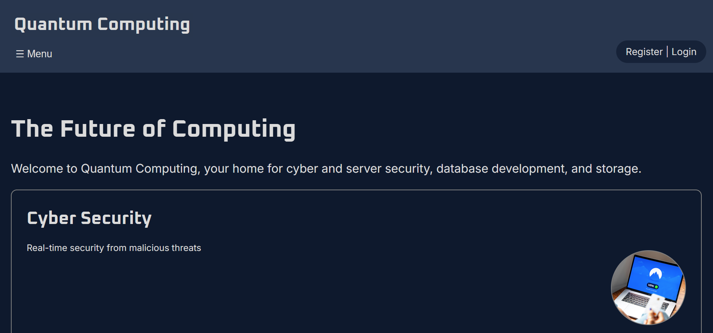

Student: Steven Plomedahl Site: Quantum Computing; cyber security and database management firm.
| Destination | Final label | Order/group rationale |
|---|---|---|
| products.html | Products | Page where potential customers/clients can evaluate security and database offerings. |
| services.html | Services | Page where potential customers/clients can evaluate security and database offerings. |
| support.html | Get Support | Page where clients can get troubleshooting and technical support, review the FAQs, and send a message. |
Method and widths tested: I tested at 320px, 768px, and 1280px and everything fit visually and was functional. Then I used the responsive slider in DevTools and determined the breakpoint to be 1120px or 70rem; this is the point where the service cards and expanded navigation bar become too crowded and "squished".
First content failure: Services cards and expanded navigation bar become crowded and squished.

Chosen breakpoint in relative units: 70rem
Long-label and zoom retest: No issues with long labels at
320px or 200% zoom.

| Condition | Expected | Observed | Result and repair |
|---|---|---|---|
| Keyboard: button, Tab, Escape, focus | All links/buttons in focus and functional when tabbed to with the keyboard. | All links/buttons in focus and functional when tabbed to with the keyboard. | Pass |
| Pointer/touch targets | Expected all pointer/touch targets to work easily and comfortably. | All pointer/touch targets worked on desktop and mobile. | Pass |
| 320px and breakpoint region | No issues were expected. | No issues. | Pass |
| 200% zoom | No issues were expected. | No issues. | Pass |
| JavaScript unavailable | I expect all links to work and for the navigation menu in mobile view to be open and functional. | No observed issues. | Pass |
| CSS unavailable / wide recovery | I expect all links to be visible, functional and in a logical order. | All links were visible and functional. One little problem was the fixed contact tag I have on the lower-right side of every page. Without CSS the text "contact" for the button is underneath the "Skip to main content" link at the top of the page. Not really a problem, but I'm going to move it. | Pass but with one small repair - I moved the contact tag link down in the html to the bottom of the main section so there is now a Contact link at the top of the page in the navigation menu and a Contact link at the bottom of the page. |
Screenshot filenames and what each proves:
breakpoint01.png shows where the 70rem/1120px breakpoint is
and shows the crowding of the elements at that width.
320px.png and 200zoom.png show that there are
no issues with long-labels and headings at 320px and 200% zoom.
Tester relationship (no name needed): Sister
Two tasks attempted:
What the tester did or said:
Change made or justified: No changes made. The tester passed the tests. I asked a third question, "Where would you go if you wanted to send the company a message." While on the "Get Support" page, the tester scrolled down to the message box for submitting messages to the company. They also clicked on the "Contact" button on the navigation as an alternative to get in contact with the company.
Explain initialization, state synchronization, activation, and Escape/focus behavior in your own words. Refer to the exact variable, attribute, dataset value, function, and event used.
The code block below connects the Menu button to the navigation menu
matching the aria-controls attribute
aria-controls="primary-nav" and
class="menu-button":
const button = document.querySelector(".menu-button");
const list = document.querySelector("#primary-nav");
This block opens and closes the navigation menu:
document.documentElement.classList.add("js");
button.hidden = false;
list.dataset.open = "false";
This block opens and closes navigation menu when the Menu button is clicked, tapped or focused with the keyboard and the Enter key or Spacebar is pressed:
function setMenu(open) {
button.setAttribute("aria-expanded", String(open));
list.dataset.open = String(open);
}
The block below toggles the navigation menu open/closed when the mouse is clicked; via aria-expanded true/false:
button.addEventListener("click", () => {
setMenu(button.getAttribute("aria-expanded") !==
"true");
});
This final block closes the navigation menu when the Escape key is pressed and returns focus to the Menu button.
document.addEventListener("keydown", (event) => {
if (
event.key === "Escape" &&
button.getAttribute("aria-expanded") ===
"true"
) {
setMenu(false);
button.focus();
}
});
Tool and purpose, or none:
I used Google Gemini to help clarify rubric terminology; no code was generated or written by AI.
Prompt/task:
What is meant by "priority visitor task" here:
Requirements N1 — Navigation architecture: Identify 2-3 priority
visitor tasks and provide 5-7 concise primary destinations in a logical
order. Use descriptive link labels and a meaningful site/brand home
link.
Accepted, changed, or rejected output:
A priority visitor task is one of the top two or three specific actions or goals that a typical user comes to the website to accomplish. Rather than designing a navigation bar based on how a company or website is organized internally, requirement N1 asks you to start with user intent. Your main navigation links should directly support these core goals.
How I verified it:
1.
How to prioritize tasks in a web project
Sujan. 10/13/2026.
https://niagaraforge.co.uk/blog/how-to-prioritise-tasks-web-design-project/